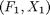
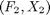

Linear Interpolation (functions)
The class contains a number of linear interpolation functions which are intended, specifically, to give the user more functionality concerning extrapolation than is provided by the standard MatLab library.
Contents
%MATLAB CODE %%%%%%%%%%%%%%%%%%%%%%%%%%%%%%%%%%%%%%%%%%%%%%%%%%%%%%%%%%%%%%%%%%%%%%%%%%% classdef bsLinearInterpolation
%%%%%%%%%%%%%%%%%%%%%%%%%%%%%%%%%%%%%%%%%%%%%%%%%%%%%%%%%%%%%%%%%%%%%%%%%%%
How to use the class
There are two ways to use the class:
- To produce an array (whether it be an matrix, a vector or just a single value) of points interpolated from a raw data object, using linear interpolation in rows.
- To produce an array (whether it be an matrix, a vector or just a single value) of points interpolated from a two dimensional raw data object, using bilinear interpolation.
Properties
%MATLAB CODE %%%%%%%%%%%%%%%%%%%%%%%%%%%%%%%%%%%%%%%%%%%%%%%%%%%%%%%%%%%%%%%%%%%%%%%%%%% properties end %%%%%%%%%%%%%%%%%%%%%%%%%%%%%%%%%%%%%%%%%%%%%%%%%%%%%%%%%%%%%%%%%%%%%%%%%%%
List of methods
The class introduces seven new methods:
1) [LinearMatrix()] : Function returns a matrix of interpolated values found using linear interpolation on a raw data set.
2) [LinearArray()] : Function returns a row vector of interpolated values found using linear interpolation on a raw data set.
3) [LinearArraySearch()] : Function returns a single interpolated value found using linear interpolation on a raw data set. The function finds the raw data points used for the interpolation from the raw data# set.
4) [LinearInterpolation()] : Function returns a single interpolated value. This is calculated through linear interpolation, using the points (F1, X1) and (F2, X2), which are inputs of the function.
5) [BiLinearInterpolation()] : Function returns a single interpolated value, specified by the point (x, y), using bilinear interpolation from the four input points.
6) [BiLinearMatrix()] : Function returns a matrix of bilinearly interpolated values, specified by elements of x, and y.
7) [BiLinearMatrixSearch()] : Function returns a single interpolated value specified by the point (Current_x, Current_y). The function finds the surrounding points needed for the interpolation, rather than having them as an input.
%MATLAB CODE %%%%%%%%%%%%%%%%%%%%%%%%%%%%%%%%%%%%%%%%%%%%%%%%%%%%%%%%%%%%%%%%%%%%%%%%%%% methods
% Constructor function obj = bsLinearInterpolation() end %%%%%%%%%%%%%%%%%%%%%%%%%%%%%%%%%%%%%%%%%%%%%%%%%%%%%%%%%%%%%%%%%%%%%%%%%%%
ans = Bootstrap.bsLinearInterpolation with no properties. Package: Bootstrap
Details of methods
1) [LinearMatrix()]
""""""""""""""""""""""""""""""""""""""""""""""""""""""""""""""""""""""""""
Description
Function returns a matrix of interpolated values found using linear interpolation on a raw data matrix. Interpolation is performed on each row of the input data.
Inputs
[x] : matrix specifying the values to be found using linear interpolation.
Data type : double array
[X] : matrix of raw data to be used in the linear interpolation process.
Data type : double array
[Y] : matrix of raw data to be used in the linear interpolation process.
Data type : double array
[Truncate] : Either 'true' or 'false'; specifies whether points outside the range of the raw data input should be truncated to the boundaries of the raw data ('true') or found using extrapolation ('false').
Data type : string
Outputs
[y] : matrix containing interpolated values.
Data type : double array
Calculations
After checking that Y and X are the same size and allocating space for the output matrix, y, the function, LinearArray(), is called to find the interpolated values specified by elements of x row by row.
%MATLAB CODE %%%%%%%%%%%%%%%%%%%%%%%%%%%%%%%%%%%%%%%%%%%%%%%%%%%%%%%%%%%%%%%%%%%%%%%%%%% % Methods and functions function y = LinearMatrix(obj, x , X , Y ,Truncate ) % assert( size(x,1) == size(X,1), 'Matrices sizes x & X dont match') assert( size(X,1) == size(Y,1), 'Matrices sizes X & Y dont match') assert( size(X,2) == size(Y,2), 'Matrices sizes X & Y dont match') y = zeros( size(x)); % Allocate storage space for i = 1 : size(X,1) y(i,:) = obj.LinearArray(x(i,1:end), X(i,1:end),... Y(i,1:end), Truncate); end end %%%%%%%%%%%%%%%%%%%%%%%%%%%%%%%%%%%%%%%%%%%%%%%%%%%%%%%%%%%%%%%%%%%%%%%%%%%
1) [LinearArray()]
""""""""""""""""""""""""""""""""""""""""""""""""""""""""""""""""""""""""""
Description
Function returns a row vector of interpolated values found using linear interpolation on a raw data matrix.
Inputs
[x] : Row vector specifying the values to be found through linear interpolation.
Data type : double array
[X] : Row vector of raw data points to be used in the linear interpolation process.
Data type : double array
[Y] : Row vector of raw data points to be used in the linear interpolation process.
Data type : double vector
[Truncate] : Either 'true' or 'false'; specifies whether points outside the range of the raw data should be truncated to the boundaries of the raw data ('true') or found using extrapolation ('false').
Data type : string
Outputs
[y] : Row vector containing linearly interpolated values.
Data type : double vector
Calculations
First a check that Y and X are both row vectors (and transposing them if they are not) is performed. After creating a matrix y to store results, the function, LinearArraySearch, is called to find interpolated values specified by elements of x.
%MATLAB CODE %%%%%%%%%%%%%%%%%%%%%%%%%%%%%%%%%%%%%%%%%%%%%%%%%%%%%%%%%%%%%%%%%%%%%%%%%%% function y = LinearArray(obj, x, X, Y,Truncate) if size(X,2) == 1 X = X'; % Algorithm assumes row inputs rather than columns end if size(Y,2) == 1 Y = Y'; end y = zeros(1, size(x,2)); % Allocate storage space for i = 1 : size(x,2) y(1,i) = obj.LinearArraySearch(x(1,i), X, Y, Truncate); end end %%%%%%%%%%%%%%%%%%%%%%%%%%%%%%%%%%%%%%%%%%%%%%%%%%%%%%%%%%%%%%%%%%%%%%%%%%%
1) [LinearArraySearch()]
""""""""""""""""""""""""""""""""""""""""""""""""""""""""""""""""""""""""""
Description
Function returns a single interpolated value. The function finds the raw data points used for the linear interpolation on the raw data array.
Inputs
[Current_x] : Data point specifying the interpolated value to be found.
Data type : double
[X] : Row vector of raw data points to be used in the linear interpolation process.
Data type : double vector
[Y] : Row vector of raw data points to be used in the linear interpolation process.
Data type : double vector
[Truncate] : Either 'true' or 'false'; specifies whether points outside the range of the raw data should be truncated to the boundaries of the raw data ('true') or found using extrapolation ('false').
Data type : string
Outputs
[y] : The interpolated value specified by the input Current_x.
Data type : double
Calculations
The function finds the two elements of X that most closely surround Current_x and passes them, along with their corresponding elements of Y, to the function, LinearInterpolation(). LinearInterpolation() then returns the value y which is the linearly interpolated value specified by Current_x.
For values of Current_x that are outside the range of X there are two options. If [Truncate] is 'true' and Current_x is outside the raw data range then the relevant boundary value of raw data is returned for y.
If Truncate is not 'true' and Current_x is outside the raw data range then the two nearest data points (both on the same side of Current_x) are passed to LinearInterpolation() which uses them to estimate y by linear extrapolation.
%MATLAB CODE %%%%%%%%%%%%%%%%%%%%%%%%%%%%%%%%%%%%%%%%%%%%%%%%%%%%%%%%%%%%%%%%%%%%%%%%%%%
function y = LinearArraySearch(obj, Current_x ,X , Y, Truncate ) X_Min = X(1, 1); X_Max = X(1, end); %''''''''''''''''''''''''''''''''''''''''''''''''''''''''''''''''''''''''''''''''' %We now need to need the values of X_1,X_2,....., F_21, & F_22 that %straddle the point of interest % Check to see if the point lies outside our grid, set equal to the % equivalent end point if strcmp(lower(Truncate) , 'true') if Current_x <= X_Min y = Y(1, 1); return; elseif Current_x >= X_Max y = Y(1,end); return; end i = 1 ; %intialise % The remaining case is to interpolate within the grid for i = 1 : size(X, 2) - 1 % The end points have already % been tested if Current_x >= X(1, i ) && Current_x <= X(1, i+1) break % Exit for loop end end else % The following code interpolates within the grid & % extrapolates outwith the grid % Get the X-coordinates if Current_x <= X_Min i = 1; elseif Current_x >= X_Max i = size(X, 2)-1 ; % This allows us to use the previous % two points to inform us of the gradient else % First calculate the indices i & j for i = 1 : size(X, 2) - 1 %The end points have already been tested if Current_x >= X(1, i ) && Current_x <= X(1, i+1) break % Exit for loop end end end end % Now use interpolation function X1 = X(1, i ); X2 = X(1, i+1); F1 = Y(1, i ); F2 = Y(1, i+1 ); y = obj. LinearInterpolation( Current_x , X1 , X2 , F1 , F2 ); return; end %%%%%%%%%%%%%%%%%%%%%%%%%%%%%%%%%%%%%%%%%%%%%%%%%%%%%%%%%%%%%%%%%%%%%%%%%%%
1) [LinearInterpolation]
""""""""""""""""""""""""""""""""""""""""""""""""""""""""""""""""""""""""""
Description
Function returns the interpolated value, specified by, x. This is achieved through linear interpolation, using the points (F1, X1) and (F2, X2).
Inputs
[x] : Point specifying the interpolated value to be found.
Data type : double
[X1] : Point specifying the first value used in the linear interpolation calculation.
Data type : double
[X2] : Point specifying the second value used in the linear interpolation calculation.
Data type : double
[F1] : First value used in the linear interpolation calculation.
Data type : double
[F2] : Second value used in the linear interpolation calculation.
Data type : double
Outputs
[y] : Interpolated value specified by, x. This is found by linear interpolation using F1, X1, F2 and X2.
Data type : double
Calculations
Using the expression:
The interpolated value, , specified by, , is linearly interpolated from the two sets of coordinates  and .
An error is given if, , as the expression above would not be defined.
and  , are expected to be monotonically increasing. So, an error is given if .
, are expected to be monotonically increasing. So, an error is given if .
%MATLAB CODE %%%%%%%%%%%%%%%%%%%%%%%%%%%%%%%%%%%%%%%%%%%%%%%%%%%%%%%%%%%%%%%%%%%%%%%%%%%
function y = LinearInterpolation(obj, x, X1, X2, F1, F2) Denominator = (X2 - X1) ; if Denominator == 0 error('Division by Zero') end if (X1 > X2) error... ('Input data must be montonic: Error occurred because X1 > X2') end y = F1 + ((F2 - F1) / Denominator) * (x- X1) ; end %%%%%%%%%%%%%%%%%%%%%%%%%%%%%%%%%%%%%%%%%%%%%%%%%%%%%%%%%%%%%%%%%%%%%%%%%%%
1) [BiLinearInterpolation]
""""""""""""""""""""""""""""""""""""""""""""""""""""""""""""""""""""""""""
Description
Returns the interpolated value specified by (x, y). Using bilinear interpolation from the coordinates and values of the four input points.
Inputs
[x] : One coordinate used to specify the interpolated value to be output.
Date type : double
[y] : One coordinate used to specify the interpolated value to be output.
Date type : double
[X_1] : The -coordinate of two of the points used in the interpolation.
Date type : double
[X_2] : The -coordinate of two of the points used in the interpolation.
Date type : double
[Y_1] : The -coordinate of two of the points used in the interpolation.
Date type : double
[Y_2] : The -coordinate of two of the points used in the interpolation.
Date type : double
[F_11] : The value of the point, specified by X_1 and Y_1, used in the bilinear interpolation calculation.
Date type : double
[F_12] : The value of the point, specified by X_1 and Y_2, used in the bilinear interpolation calculation.
Date type : double
[F_21] : The value of the point, specified by X_2 and Y_1, used in the bilinear interpolation calculation.
Date type : double
[F_22] : The value of the point, specified by X_2 and Y_2, used in the bilinear interpolation calculation.
Date type : double
Outputs
The interpolated value specified by the point (x, y).
Data type : double
Calculations
The interpolated value, , specified by , is calculated using the expression below. The point  is surrounded by a rectangle with vertices; , , and .
is surrounded by a rectangle with vertices; , , and .
The indices on each, , correlate to their and coordinates e.g. is specified by and so on.
%MATLAB CODE %%%%%%%%%%%%%%%%%%%%%%%%%%%%%%%%%%%%%%%%%%%%%%%%%%%%%%%%%%%%%%%%%%%%%%%%%%%
function f = BiLinearInterpolation(obj, x, y, X_1, X_2, Y_1, Y_2, ... F_11, F_12, F_21, F_22) Denominator = (X_2 - X_1) * (Y_2 - Y_1); if Denominator == 0 error('Division by Zero') end if (X_1 > X_2) || (Y_1 > Y_2) error(... 'Input data must be montonic: Error occurred because either X_1 > X_2 OR Y_1 > Y_2') end f = (1 / Denominator) * ((X_2 - x) * (Y_2 - y) * F_11 +... (x - X_1) * (Y_2 - y) * F_21 + (X_2 - x) * (y - Y_1) * F_12 +... (x - X_1) * (y - Y_1) * F_22); end %%%%%%%%%%%%%%%%%%%%%%%%%%%%%%%%%%%%%%%%%%%%%%%%%%%%%%%%%%%%%%%%%%%%%%%%%%%
1) [BiLinearMatrix]
""""""""""""""""""""""""""""""""""""""""""""""""""""""""""""""""""""""""""
Description
Function returns a matrix of bilinearly interpolated values, specified by the vectors, x and y.
Inputs
[x] : Row vector specifying the values to be found through bilinear interpolation.
Data type : double vector
[X] : Row vector of raw data to be used in the bilinear interpolation process.
Data type : double vector
[y] : Row vector specifying the values to be found through bilinear interpolation.
Data type : double vector
[Y] : Row vector of raw data to be used in the bilinear interpolation process.
Data type : double vector
[Grid] : A matrix of raw data values, each corresponding to a pair of X and Y elements.
Data type : double array
[Truncate] : Either 'true' or 'false'; specifies whether points outside the range of the raw data grid should be truncated to the boundaries of the raw data ('true') or found using extrapolation ('false').
Data type : string
Outputs
An matrix of interpolated values corresponding to pairs of x and y elements.
Data type : double array
Calculations
A matrix, z, is created to store results. Then, elements of x and y are passed to BiLinearSearch(), one pair at a time.
BilinearSearch() then returns the bilinearly interpolated results, which populate the matrix, z, point by point.
%MATLAB CODE %%%%%%%%%%%%%%%%%%%%%%%%%%%%%%%%%%%%%%%%%%%%%%%%%%%%%%%%%%%%%%%%%%%%%%%%%%%
function z = BiLinearMatrix(obj, x , y , X , Y , Grid, Truncate ) z = zeros( size(x,2),size(y,2) ); % Allocate storage space for i = 1 : size(x,2) for j = 1 : size(y,2) z(i,j) = obj.BiLinearMatrixSearch(x(1,i), y(1,j), X, Y,... Grid, Truncate); end end end %%%%%%%%%%%%%%%%%%%%%%%%%%%%%%%%%%%%%%%%%%%%%%%%%%%%%%%%%%%%%%%%%%%%%%%%%%%
1) [BiLinearMatrixSearch]
""""""""""""""""""""""""""""""""""""""""""""""""""""""""""""""""""""""""""
Description
Function returns a single interpolated value, specified by the single point (Current_x, Current_y). The function locates the surrounding points, needed for the bilinear interpolation, from the raw data inputs.
Inputs
[Current_x] : -coordinate of the point specifying the value to be found through bilinear interpolation.
Data type : double
[Current_y] : -coordinate of the point specifying the value to be found through bilinear interpolation.
Data type : double
[X] : Row vector of raw data to be used in the bilinear interpolation process.
Data type : double
[Y] : Row vector of raw data to be used in the bilinear interpolation process.
Data type : double
[Grid] : matrix of raw data corresponding to elements of X and Y.
Data type : double array
[Truncate] : Either 'true' or 'false'; specifies whether points outside the range of the raw data should be truncated to the boundaries of the raw data ('true') or found using extrapolation ('false').
Data type : string
Outputs
Interpolated value, specified by the point (Current_x, Current_y).
Date type : double
Calculations
The function finds the four points with coordinates from elements of X and Y that most closely surround the point (Current_x, Current_y) and passes them (along with the corresponding elements of Grid) to the function, BiLinearInterpolation().
BiLinearInterpolation() then returns the bilinearly interpolated value, specified by (Current_x, Current_y).
For values of Current_x or Current_y that are outside the range of X there are two options, which are controlled with the property Truncate.
If Truncate is 'true' and both, Current_x and Current_y are outside the raw data range then the relevant boundary value of raw data is returned for z.
If Truncate is 'true' and only one of Current_x and Current_y are outside of the range of the raw data, the boundary value of the Grid is used in the direction that extends past the raw data. In the direction that is covered by the raw data bilinear interpolate is conducted here instead of calling BiLinearInterpolation().
If Truncate is not 'true' and Current_x or Current_y are outside the raw data range then the two nearest data points (both on the same side of Current_x or Current_y) are passed to LinearInterpolation() which uses them to estimate z by extrapolation.
%MATLAB CODE %%%%%%%%%%%%%%%%%%%%%%%%%%%%%%%%%%%%%%%%%%%%%%%%%%%%%%%%%%%%%%%%%%%%%%%%%%%
function y = BiLinearMatrixSearch(obj, Current_x, Current_y, X, Y,... Grid, Truncate) Y_Min = Y(1, 1); Y_Max = Y(1, end); X_Min = X(1, 1); X_Max = X(1, end); %We now need to need the values of X_1,X_2,....., F_21, & F_22 that % straddle the point of interest % Check to see if the point lies outside our grid, set equal to the % equivalent end point if strcmp(lower(Truncate) , 'true') if Current_y <= Y_Min && Current_x <= X_Min y = Grid(1, 1); return; elseif Current_y <= Y_Min && Current_x >= X_Max y = Grid(end, 1); return; elseif Current_y >= Y_Max && Current_x <= X_Min y = Grid(1, end); return; elseif Current_y >= Y_Max && Current_x >= X_Max y = Grid(end, end); return; end % Check to see if the point lies on the either of the time % boundaries i = 1 ; %intialise j = 1 ; %intialise % k = 0 ; %intialise if Current_y <= Y_Min for i = 1 : size(X, 2)-1 %End points have already been tested if Current_x >= X(1, i ) && Current_x <= X(1,i+1) % Reduces to linear interpolation y = (Current_x - X(1, i )) / (X(1,i+1) - X(1,i )) ... * Grid(i+1, 1) + Grid(i , 1) * ... (1 - (Current_x - X(1,i )) ... / (X(1, i+1) - X(1, i ))); return; end end elseif Current_y >= Y_Max for i = 1 : size(X, 2) - 1 %End points have already been tested if Current_x >= X(1,i ) && Current_x <= X(1, i+1) y = (Current_x - X(1, i )) / (X(1, i+1) - X(1,i )) ... * Grid(i+1, size(Y, 2)) + Grid(i , size(Y, 2)) * ... (1 - (Current_x - X(1, i )) ... / (X(1,i+1) - X(1,i ))); return; end end end if Current_x <= X_Min for i = 1 : size(Y, 2) - 1 %End points have already been tested if Current_y >= Y(1, i ) && Current_y <= Y(1, i+1) y = (Current_y - Y(1, i )) / (Y(1, i+1) - Y(1, i )) ... * Grid(1, i+1) + Grid(1, i ) * ... (1 - (Current_y - Y(1, i ))... / (Y(1, i+1) - Y(1, i ))); return; end end elseif Current_x >= X_Max for i = 1 : size(Y, 2) - 1 %End points have already been tested if Current_y >= Y(1, i ) && Current_y <= Y(1, i+1) y = (Current_y - Y(1, i )) / (Y(1, i+1) - Y(1, i ))... * Grid(size(X, 2), i+1) + Grid(size(X, 2), i ) * ... (1 - (Current_y - Y(1, i ))... / (Y(1, i+1) - Y(1, i ))); return; end end end %The remaining case is to interpolate within the grid %First calculate the indices i & j for i = 1 : size(X, 2) - 1 %End points have already been tested if Current_x >= X(1, i ) && Current_x <= X(1, i+1) break % Exit for loop end end for j = 1 : size(Y, 2) - 1 %End points have already been tested if Current_y >= Y(1, j ) && Current_y <= Y(1, j+1) break % Exit for loop end end else % The following code interpolates within the grid & % extrapolates outside the grid % Get the X-coordinates if Current_x <= X_Min i = 1; elseif Current_x >= X_Max i = size(X, 2)-1 ; % This allows us to use the previous % two points to inform us of the gradient else % First calculate the indices i & j for i = 1 : size(X, 2) - 1 if Current_x >= X(1, i ) && Current_x <= X(1, i+1) break % Exit for loop end end end % Get the Y-coordinates if Current_y <= Y_Min j = 1; elseif Current_y >= Y_Max j = size(Y, 2) -1 ; % This allows us to use the previous % two points to inform us of the gradient else for j = 1 : size(Y, 2) - 1 if Current_y >= Y(1, j ) && Current_y <= Y(1, j+1) break end end end end % Now use interpolation function X_1 = X(1, i ); X_2 = X(1, i+1); Y_1 = Y(1, j ); Y_2 = Y(1, j+1); F_11 = Grid(i , j ); F_12 = Grid(i , j+1); F_21 = Grid(i+1, j ); F_22 = Grid(i+1, j+1); y = obj.BiLinearInterpolation(Current_x, Current_y, X_1, X_2, ... Y_1, Y_2, F_11, F_12, F_21, F_22); return; end
end
end